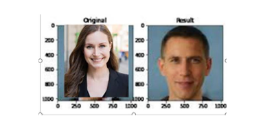

Ethics in AI
One day you'll end up in a heated conversation on twitter. It started with a university professor's
(@TuringLives) tweet on photo recreation models. He told about a model developed in his lab. The
model depixelated an input image of Finnish Prime Minister Sanna Marin into a photo of middle-
aged white male:

The Twitter debate proceeds as follows:
@TuringLives: “Contemporary “face upsampling” systems just do this. If one trains algorithms with images of white males, algorithms produce images of white males. That's how they work.
@AdaLovelace: “ This is an example of about something more important: The hidden dangers of our algorithms. The hidden biases of our algorithms. Would you want algorithms like these to decide, who gets a job, gets arrested or passes the security check in the airports? I don't. ”
@Turinglives: “That's how these systems work, guys. These algorithms produce biased results, if they are trained with biased data. Face upsampling systems make everyone look white males, if they are trained with the datasets of white males.”
@EugeneG: “But that's not the problem, man. It really isn't about datasets, it is about the whole machine learning industry. Don't reduce harms caused by this industry to dataset bias.”
@Turinglives: “Well, I didn't. All I say: If we use biased datasets, then we'll have biased results. That's why researchers need to be more careful selecting their data so that they don't accidentally encode biases like this. And, it is one thing to do research, and an another thing to deploy these methods in real world applications. One should worry about bias in practical applications, not bias in academic research.”
@Gödel'sGhost: “Users get their applications from the engineers, the engineers get their methods from computer scientists. At least computer scientists should recognize how biased their methods are. And tell it.”
@Turinglives: “Yes, I agree. But isn't it one thing to do research on these things, and another to deploy them in practice? The consequences of bias are more problematic, when they are in a deployed product than in an academic paper. Don ́t bark the wrong tree.”
@TheManIntheChineseRoom: “So, you basically say: Researchers might acknowledge their data is biased, use it anyway because it's there, and then say ”it's acceptable because it is just an academic experiment and I am not responsible, ifsomeone uses it in a way that causes harm? Is that your answer?”
@Turinglives: ”Well, yes and no. Isn't there a difference between basic research and using applications in real world tasks? Think about physicists. Are physicists responsible for nuclear weaponry? Or, are biologists studying genes responsible for eugenetics? Isn't this precisely the same question? Can we judge basic research, because there can be bad applications? And still, I acknowledge, bias is a big concern, but for the real world applications.”
@YourReply:”...”?
The development of this course relies on your feedback. To give you a concrete incentive to give feedback, you'll even get exercise points for giving feedback!
The deadline for this exercise is November 1 (one week after the course exam).
Give feedback in both of the following ways:
- First, submit anonymously through the university feedback system. You can find the feedback form in WebOodi.
- After you have submitted the anonymous feedback, send email to the lecturer: teemu.roos@cs.helsinki.fi. Important: Include the magic word IntroAI2020 on the subject line so that Teemu will find your message in his inbox among 5615 unread messages.
To get 1p for item 1, mention in your email that you have submitted the anonymous feedback through the feedback system — after actually doing so, of course.
Also give feedback in the email. You can summarize your anonymous feeback briefly. Don't worry if the content is overlapping.